Week 1 · Day 2 — why ethanol boils 100 °C above its isomer
Organic Chemistry 1
About this lecture
Yesterday we left two bottles of C₂H₆O on the bench: ethanol boils at 78 °C, dimethyl ether at −24 °C. Same atoms, a 100-degree gap. Today we explain it. And the police breath test? It shines infrared light through your breath and measures how much ethanol absorbs.
Today we learn:
Polarity: why bonds and molecules carry partial charges
Hydrogen bonds: donors, acceptors and how to count them
Properties: boiling points and water solubility from structure
IR spectroscopy: reading the axes and a few key bands
Limits: what one observation can and can’t prove
Yesterday you learned to read a structure; today you use it to predict what a molecule does.
Electronegativity makes bonds polar
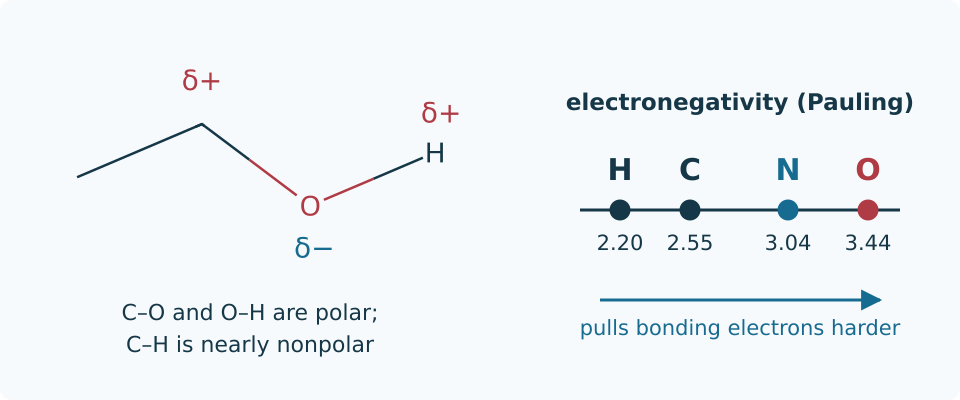
Ethanol with partial charges, beside a Pauling electronegativity scale
The more electronegative atom pulls the shared electrons towards itself and gets a partial negative charge, δ−. O and N are the electron-greedy atoms in organic molecules; C–H bonds are close to nonpolar.
Partial charge is not formal charge
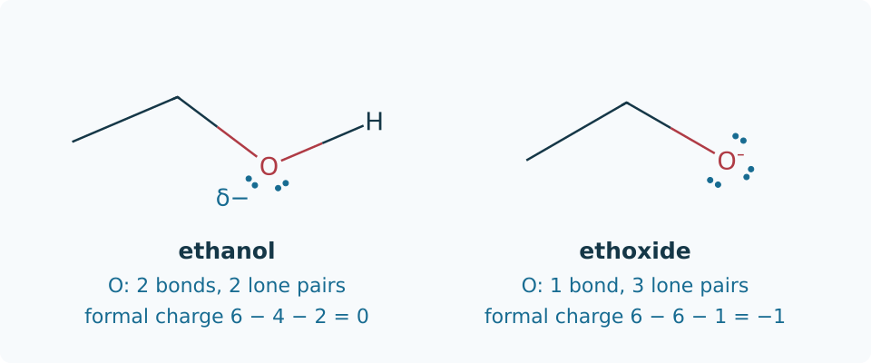
Ethanol and ethoxide with oxygen lone pairs and charge bookkeeping
δ− describes uneven sharing in a neutral molecule. Formal charge is Day 1’s integer electron count.
Try it: the O in ethanol is δ−. Does it carry a formal charge of −1?
No. Two bonds and two lone pairs give 6 − 4 − 2 = 0. The δ− is a fraction of an electron, not a whole extra one.
Polar bonds, polar molecule? Add the vectors
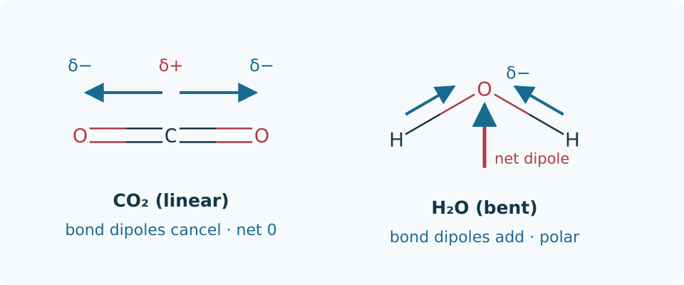
Carbon dioxide bond dipoles cancel; water bond dipoles add
Each polar bond is an arrow pointing at its δ− end. The molecular dipole is their vector sum, so shape decides.
Try it: a friend says “CO₂ has two polar bonds, so it’s a polar molecule.” What did they forget?
Geometry. CO₂ is linear, so its two equal bond dipoles point in opposite directions and cancel. Bent water keeps a net dipole.
Same size, very different boiling points
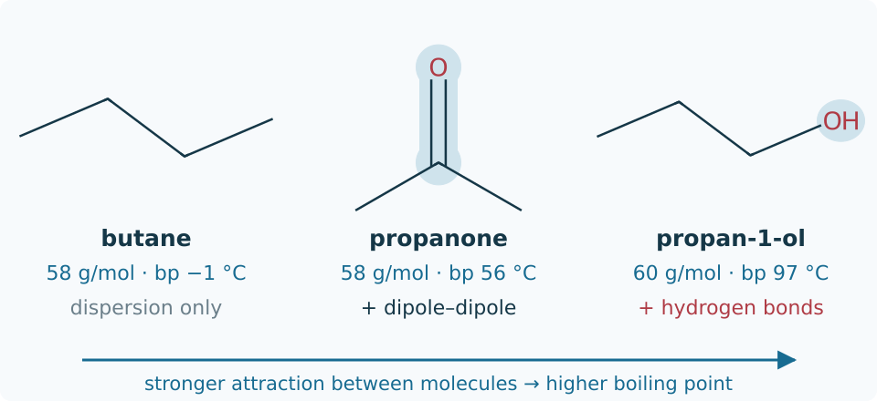
Butane, propanone and propan-1-ol with similar molar mass and rising boiling points
Dispersion: every molecule has it; grows with size and contact area.
Dipole–dipole: polar molecules line up δ+ to δ−.
Hydrogen bonds: an O–H or N–H meets a lone pair. The strongest of the three.
The hydrogen bond: a donor meets an acceptor
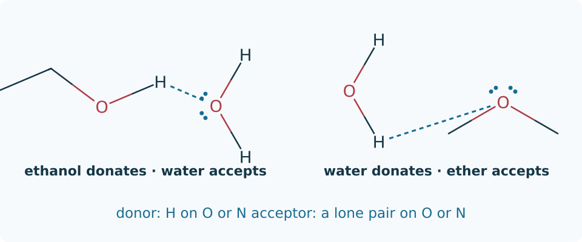
Ethanol donating to water, and water donating to dimethyl ether
The donor brings an H on O or N. The acceptor brings a lone pair on O or N. The dashed contact is between molecules: no covalent bond forms or breaks.
Count donors and acceptors
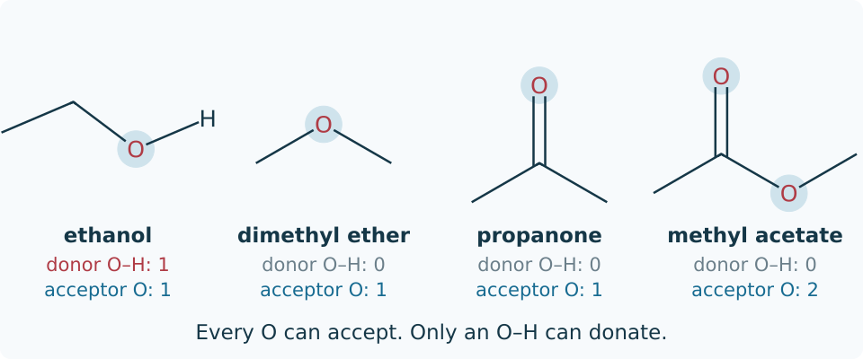
Donor and acceptor counts for ethanol, dimethyl ether, propanone and methyl acetate
Ask two separate questions of every molecule: is there an O–H or N–H? and is there a lone pair on O or N?
Try it: can pure dimethyl ether form hydrogen bonds with itself?
No. Its O can accept, but it has no O–H to donate. Mixed with water, it can accept from water’s O–H.
Amines: count the N–H, then the lone pair
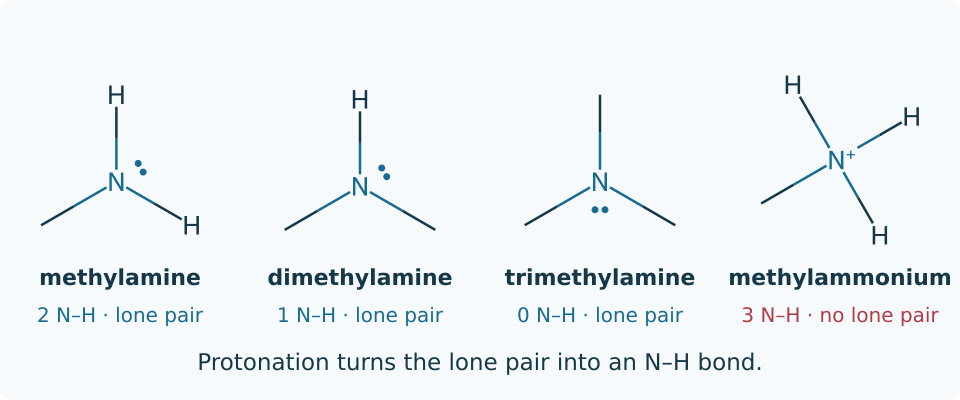
Methylamine, dimethylamine, trimethylamine and methylammonium
Neutral amines all accept at N. Only those with N–H can donate. Adding H⁺ uses up the lone pair.
Try it: CH₃NH₂ picks up a proton to become CH₃NH₃⁺. Can that N still accept a hydrogen bond?
No. The lone pair became the new N–H bond, so N has four bonds and no lone pair. It gained a donor and lost its acceptor.
Ethanol molecules hold on to each other through O–H···O hydrogen bonds. To boil, they must be pulled apart. Dimethyl ether has no O–H, so its molecules let go easily.
Try it: which bonds break when ethanol boils?
None of the covalent ones. Boiling separates whole ethanol molecules by overcoming the attractions between them. Breaking C–O would be a chemical reaction.
Size and shape: dispersion adds up
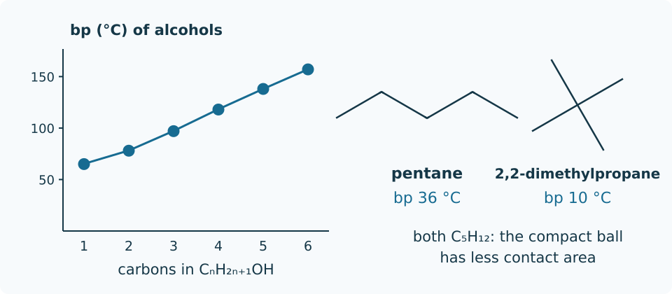
Boiling points of straight-chain alcohols, and pentane versus 2,2-dimethylpropane
Every extra CH₂ adds contact area and roughly 20 °C of boiling point. Branching makes a molecule more compact, so it touches its neighbours less and boils lower.
Will it dissolve in water?
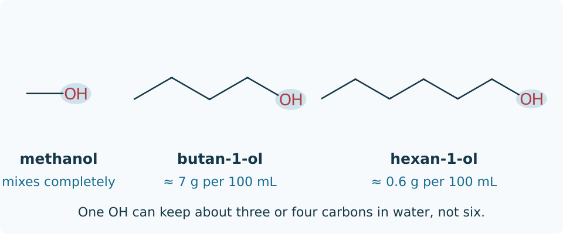
Methanol, butan-1-ol and hexan-1-ol with the OH shaded and their water solubility
Water welcomes the polar head that can hydrogen-bond, but the hydrocarbon tail gets in the way. The longer the tail per OH, the lower the solubility.
Try it: which mixes better with water, methanol or hexan-1-ol? And what does “it has an OH, so it dissolves” miss?
Methanol. Hexan-1-ol has six carbons per OH; the big nonpolar tail outweighs one polar head. A single OH doesn’t settle the question.
A charge changes everything
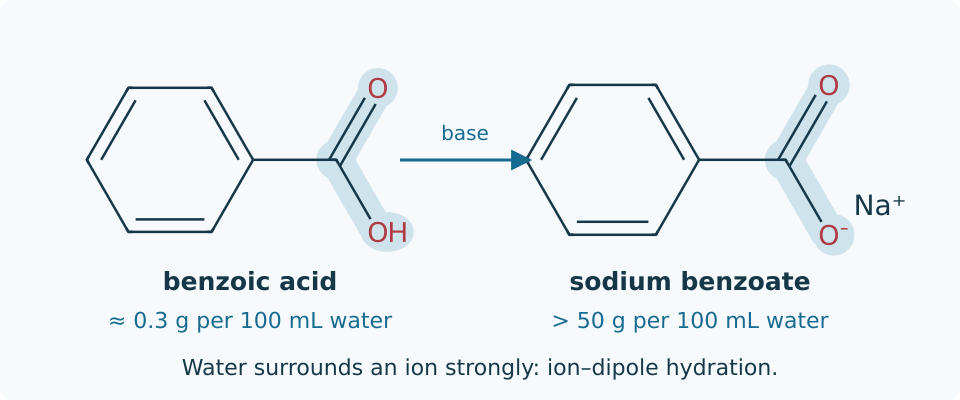
Benzoic acid and sodium benzoate with the carboxyl group shaded
An ion is surrounded by water dipoles (ion–dipole hydration), far more strongly than a neutral molecule. Add base, and an acid that barely dissolves becomes very soluble.
Try it: your benzoic acid is mostly ionised in a basic water layer. Is that enough to predict how many grams you recover in an extraction?
No. You also need how the neutral form partitions between the two solvents, the phase volumes, the starting amount and losses. Speciation alone gives ratios, not grams.
IR: bonds vibrate like springs
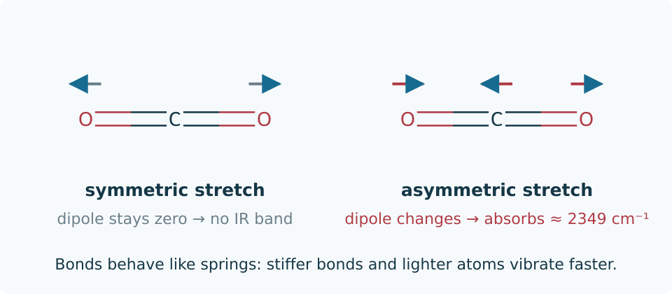
Symmetric and asymmetric stretches of carbon dioxide
Infrared light makes bonds stretch and bend. A vibration absorbs only if it changes the dipole. Positions are given as wavenumbers (cm⁻¹): higher means stiffer bonds or lighter atoms.
Read the axes before the peaks
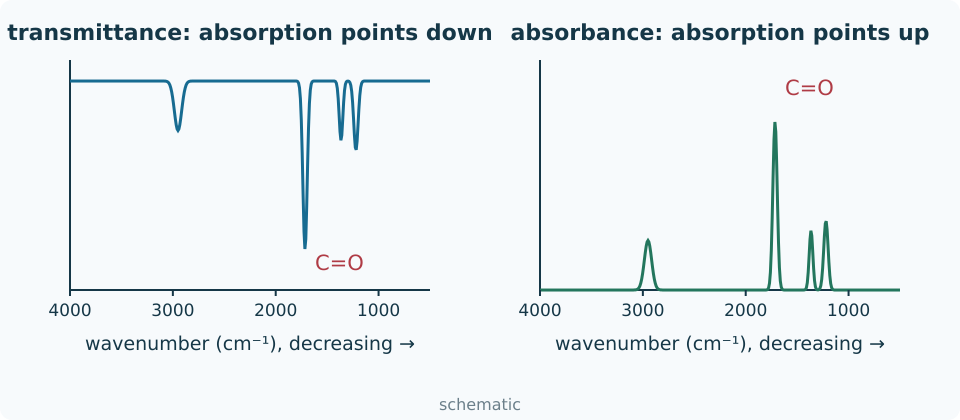
The same carbonyl band plotted as transmittance and as absorbance
The x-axis runs backwards, from 4000 down to about 500 cm⁻¹. On a transmittance plot absorption is a dip; on an absorbance plot it’s a peak.
Try it: a classmate’s spectrum has tall upward bands and they think it’s wrong. What do you check?
The y-axis label. If it says absorbance, upward bands are correct: it’s the same absorption drawn the other way up.
The regions worth knowing
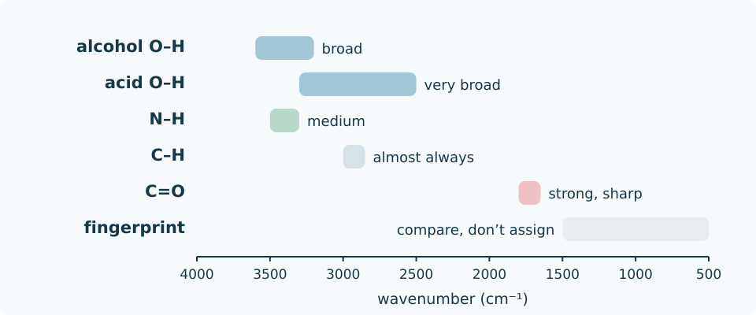
Bars showing approximate IR ranges for O–H, N–H, C–H and C=O
Above 2500: bonds to H. Hydrogen bonding makes O–H bands broad.
1650–1800: C=O, strong and sharp. Its exact position depends on the neighbours.
Below 1500: the fingerprint region. Compare whole patterns; don’t assign single bands.
Three spectra side by side
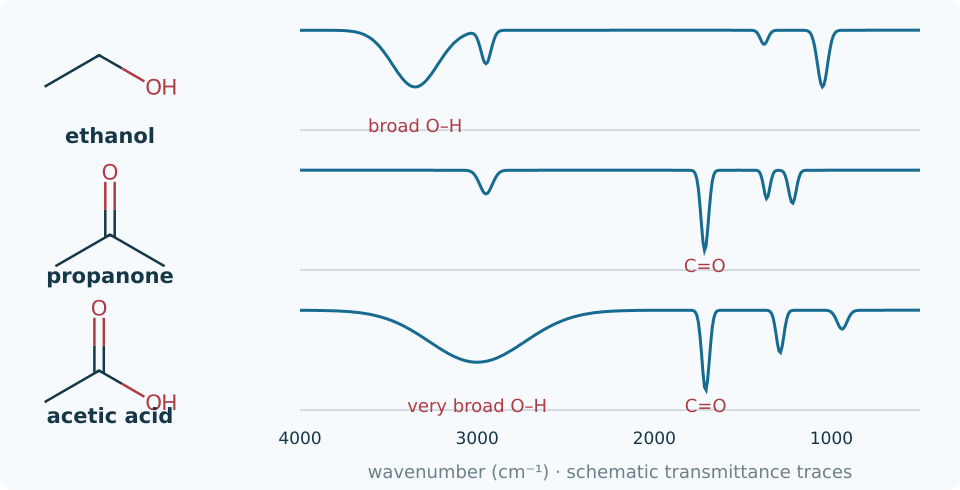
Schematic IR traces of ethanol, propanone and acetic acid
Read each one with two questions: is there a broad O–H? and is there a strong C=O? The two answers already separate an alcohol, a ketone and an acid.
Using IR to choose between candidates
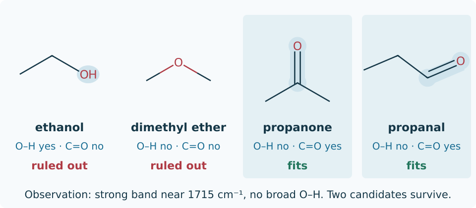
Four C3 and C2 candidates with their predicted O–H and C=O bands
Predict the bands for each candidate first, then compare with the data. Both presence and absence count as evidence.
Try it: a strong band at 1715 cm⁻¹ and no O–H. Does that prove the sample is propanone?
No. It supports a C=O and no O–H, but propanal and many other carbonyl compounds fit too. You need more evidence to name one structure.
What one spectrum can and can’t tell you
observation
supports
doesn’t prove
strong band near 1715 cm⁻¹
a C=O is present
which carbonyl compound
broad band near 3300 cm⁻¹
an O–H somewhere in the sample
that the target has O–H (water?)
no band at 1650–1800
no C=O in the sample
anything about the rest of the molecule
it absorbs IR at all
some vibrations change the dipole
that it dissolves in water
A wet sample shows water’s broad O–H even if your compound has none. Check the sample before you blame the structure.
Mistakes we see every year
mistake
fix
“O is δ−, so it’s O⁻”
δ is partial; formal charge comes from bonds and lone pairs
“two polar bonds, so a polar molecule”
add the vectors: geometry decides
“it has oxygen, so it hydrogen-bonds with itself”
a donor needs O–H or N–H
“boiling breaks the C–O bond”
boiling separates intact molecules
“it has an OH, so it dissolves in water”
weigh the polar head against the tail
“the IR peaks point the wrong way”
check transmittance vs absorbance
“1715 cm⁻¹, so it’s propanone”
one band supports a group, not an identity
Summary
concept
key fact
bond polarity
O and N pull electrons: δ−
partial vs formal charge
uneven sharing vs integer bookkeeping
molecular dipole
vector sum of bond dipoles; shape decides
hydrogen bond
donor O–H/N–H + acceptor lone pair
boiling point
H-bonds, then size and shape; molecules stay intact
water solubility
polar head vs hydrocarbon tail; ions dissolve best
IR absorption
a vibration that changes the dipole; check the y-axis
key bands
O–H 3200–3600 broad · C=O 1650–1800 strong
Next: what happens when that O–H gives away its proton: acids and bases (Day 3). Practice:exercises · self-check